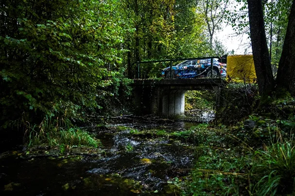
Analyzing the Drivers' Pace in the 2023 WRC Season
The 2023 WRC history is now in the history books. Kalle Rovanpera was the champion, with the Finn claiming his 2nd consecutive championship crown ahead of teammate Elfyn Evans. But were these two indeed the fastest drivers this season? That’s what we are going to find out in this post, as I have analysed the pace from all the drivers this season, excluding stages were punctures/spins/crashes or mechanical issues made an appearance. This is a follow up to my mid-season pace analysis post that I made after Rally Estonia, so you can check that if you want before reading this, to compare the mid-season to the end of the season results! An honourable mention goes to Craig Breen who was 0,16 s/km slower than the ideal pace in Sweden, and was the fastest on that rally.
Without further ado, let’s get into the list.
11 . Grégoire Munster – 1 s/km – 23 stages
Gregoire Munster is a pleasant surprise in terms of pace. Most people that follow WRC expected the Luxembourger to be some way off the pace, but he held his own against his more experienced Rally1 colleagues. Especially in the Central European Rally, Munster was very good on wet tarmac, often being faster than teammate Loubet, Suninen and Taka Katsuta. These are encouraging signs for Munster, let’s see what he can do if he gets more Rally1 outings next season.
Best Performance: CER: 0,9 s/km (13 stages)
Worst Performance: Chile: 1,13 s/km (10 stages)
10 . Pierre Louis Loubet – 0,74 s/km – 103 stages
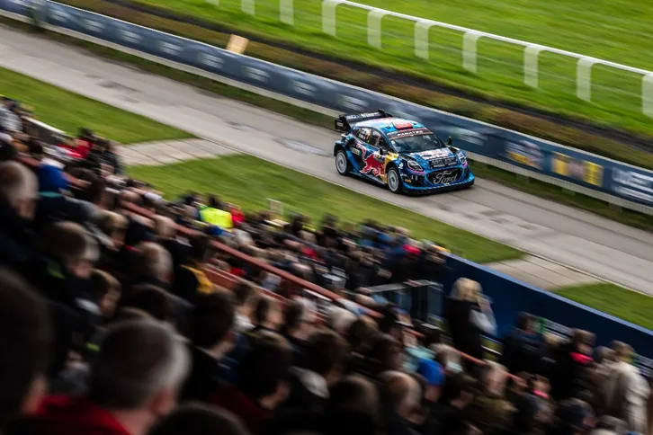
Where do we start with Pierre Louis season… The Frenchman headed into 2023 hoping to build on his encouraging 2022 part time programme, but instead his season resembled more of his disastrous 2021 season with 2C Competition. There were signs of pace on rough gravel events, perhaps also because of his favourable road position, but Pierre Louis scored a combined 0 points on rough gravel events this season. Not all retirements were his fault, as the Puma was unreliable, especially on the first half of the season. Loubet also parted ways with Nicolas Gilsoul at the end of the season, aiming for a hard reset for 2024. Whether or not he will have a chance at having that reset, that’s another story…
Best Performance: Chile: 0,25 s/km (8 stages)
Worst Performance: Mexico: 1,41 s/km (6 stages)
9. Takamoto Katsuta – 0,58 s/km – 181 stages
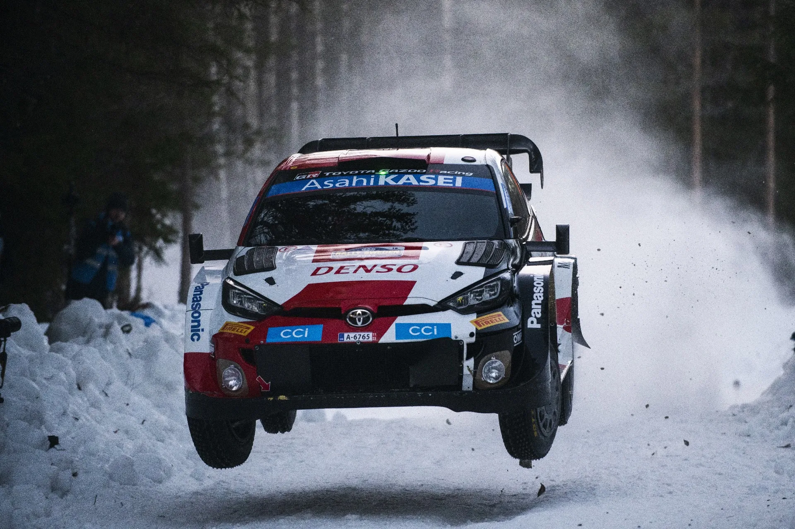
It was truly a season of 2 halves for Japan’s Takamoto Katsuta. The Toyota driver had a less than ideal start to the season, with 4 non scores in the first 6 rallies of the season. His 2nd half was a lot better, with a podium in Finland and a very strong outing in his home rally in Japan. Taka’s problem is that he is a driver who lacks that consistency. Across the season he has ranged from the slowest of the Rally1s in rallies like Acropolis and Estonia, to the fastest in the finale in Japan (albeit, we don’t know how much people were pushing on Saturday and Sunday).
Best Performance: Japan: 0,15 s/km (13 stages)
Worst Performance: Mexico: 1,16 s/km (9 stages)
8. Dani Sordo – 0,54 s/km – 96 stages
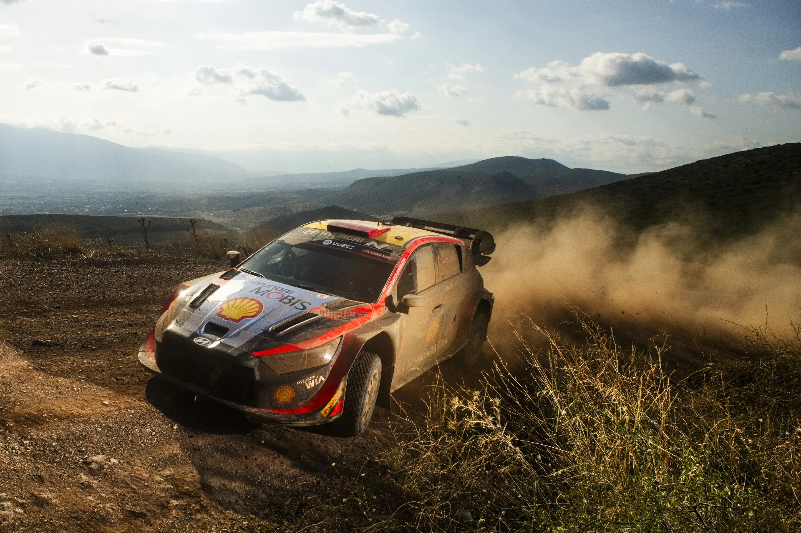
Dani Sordo’s 2023 season was also a mixed bag. In Monte he looked like he hadn’t driven a Rally1 on tarmac before, but in Portugal he looked like he had found good rhythm in his i20, to finish 2nd. In general, Sordo was a sort of buffer between the top 5 drivers and what I like to call WRC 1.5, of Taka, Loubet and any other gentleman driver. 2 podiums is not bad at all, but the Spaniard seems to be getting those because of his consistency and not his outright speed. Let’s see what he can do in 2024, which is set to be his swan song in the WRC.
Best Performance: Portugal: 0,32 s/km (17 stages)
Worst Performance: Monte Carlo: 0,87 s/km (17 stages)
7. Teemu Suninen – 0,48 s/km – 69 stages
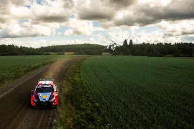
From one Hyundai to the other, we move to Teemu Suninen. Suninen was drafted as a replacement for Craig Breen for mostly fast gravel events, and the Finn did okay. 5th in Estonia and 4th in Finland were the highlights of his season, with the Finn showing promising pace. He could have had 2nd in Chile, but he broke his suspension driving over a tree stump on the penultimate stage and retiring. A subpar CER followed, but the conditions were difficult, especially for someone who doesn’t have experience in a Rally1 on tarmac. All in all, Suninen showed that he can be competitive in a Rally1 car, but whether he will get a chance to show it remains to be seen, as Ott Tanak’s arrival at Hyundai makes the 3rd car situation something to look out for in the coming weeks.
Best Performance: Chile: 0,3 s/km (17 stages)
Worst Performance: CER: 0,76 s/km (17 stages)
6. Esapekka Lappi – 0,40 s/km – 138 stages
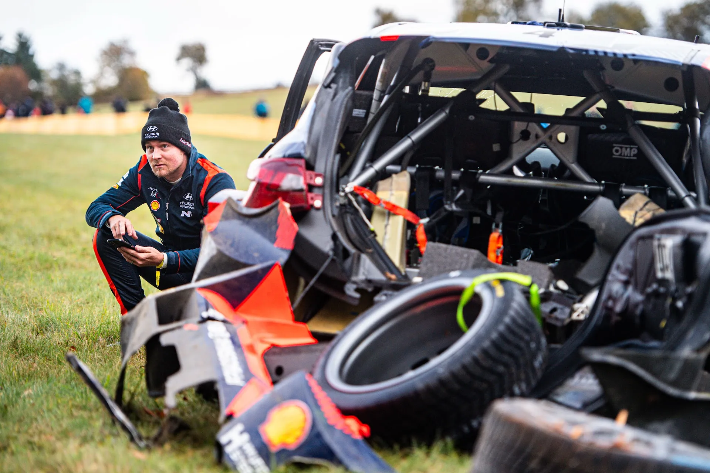
Esapekka Lappi’s season was also a season of two halves. The Finn was the 4th fastest driver after Estonia, but he now finds himself in 6th. The Hyundai driver endured a miserable 2nd half, crashing out early on in Finland, Chile and CER. I wrote that Lappi seemed to be the ideal number 2 to Neuville for Hyundai, but this won’t be how the 2024 season will go for Lappi. He will do a part time season (his choice) sharing the 3rd car with other drivers. Lappi still has a lot of speed in him, that’s unquestionable, but 2023 was his chance at showing that he can regularly fight at the top, and he didn’t make the most out of it.
Best Performance: Mexico: 0,025 s/km (6 stages), a more representative one is Sardegna and Sweden where he was 0,25 s/km off
Worst Performance: Monte Carlo: 0,72 s/km (17 stages)
5. Ott Tanak – 0,37 s/km – 159 stages
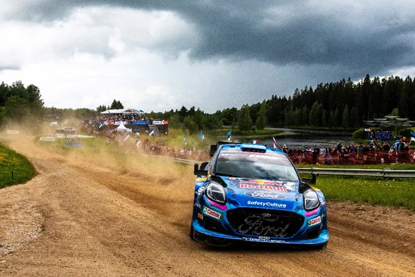
Tanak is certainly relieved that 2023 has come to an end. The Estonian is leaving M-Sport for Hyundai for the upcoming season and as far as I can tell he couldn’t be happier. Despite his two wins in Chile and Sweden, Tanak struggled in the Puma Rally1. He had many mechanical problems throughout the season, and in all honestly, he never looked like he got to grips with the car. There are still positives to take out from the season, but definitely not as many the 2019 champion would have wanted or expected when he signed his M-Sport deal.
Best Performance: Chile: 0,12 s/km (13 stages)
Worst Performance: Safari: 0,79 s/km (13 stages)
4. Elfyn Evans – 0,34 s/km – 171 stages
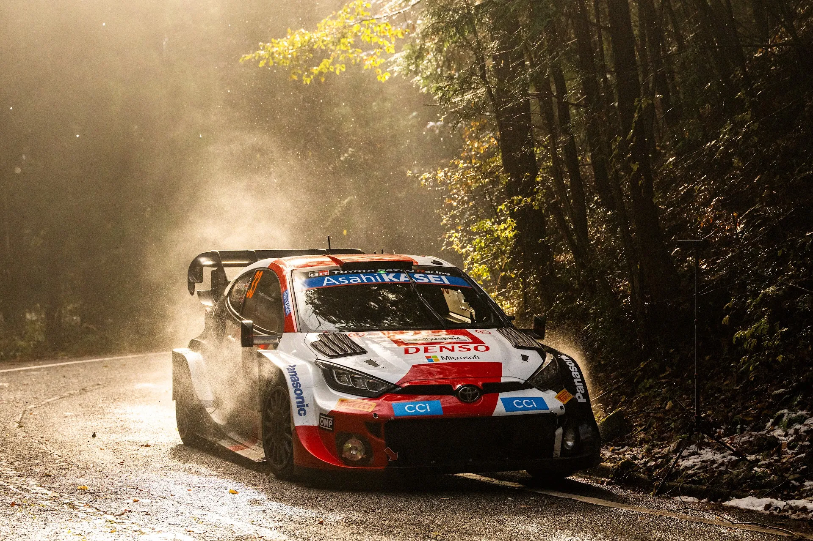
Just like I said after Estonia, Evans has his place in the final championship standings mostly because of his consistency. The Welshman ends the season in 2nd, with the join most wins in 2023, but yet none were a convincing performance. In Croatia all his rivals went out or suffered punctures, in Finland yes he was rapid, but one would suspect he wouldn’t have had the speed to match Kalle, and in Japan the rally was over after the morning loop of Friday. As harsh as this might sound, Evans is yet to fully regain his 2021 form with a Rally1 car. His 2nd half of the season was better than the first, but is still not where the Welshman would want to be I suspect.
Best Performance: Finland: 0,06 s/km (20 stages)
Worst Performance: Sardegna: 0,74 s/km (11 stages)
3. Thierry Neuville – 0,25 s/km – 188 stages
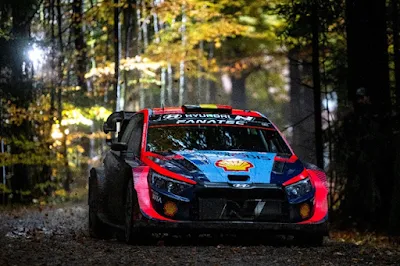
Another season passed, and yet again Neuville has been close, but yet so far to the championship he so much desires. But this year is a little bit different. Neuville only made 2,5 mistakes this season, one being his off in the power stage in Sweden that cost him 3 or 4 points, the other is his off from the lead in Croatia, and the last is his off in Japan, which in fairness was in a rally where everything had been decided. Neuville showed pace in rallies that he hadn’t been fast before, namely all the fast gravel rallies, and also was hit with mechanical issues in Portugal, Safari and Acropolis. Next year will be more difficult for him with the arrival of his old foe Ott Tanak
Best Performance: Croatia and Finland: 0,18 s/km (13 stages and 20 stages)
Worst Performance: Safari: 0,52 s/km (10 stages)
2. Kalle Rovanpera – 0,23 s/km – 180 stages
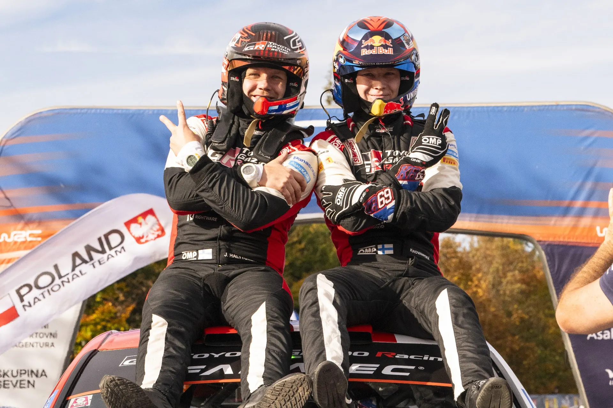
For the 2nd year running, Kalle Rovanpera finds himself on top of the standings at the end of the season. The Finn’s 2nd title may have been less dominant than the first one, but it was just as impressive. Kalle showed great maturity in 2023, judging when to push rather than going flat out and risking a mistake. And when he decided to go for it, he was unbeatable. In Estonia he won 11 stages in a row (!!) for example. Kalle was the fastest and the most consistent out of the ones that did a full season, simple as. Lets see if he will go for title number three in 2024. (Update, he will not 😱)
Best Performance: Finland: 0,02 s/km (6 stages)
Worst Performance: Sardegna: 0,59 s/km (14 stages)
1. Sebastien Ogier – 0,19 s/km – 111 stages
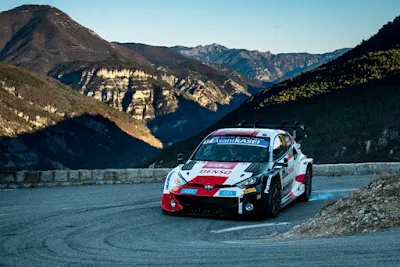
Well well well… If it isn’t the 8 times World Champion Seb Ogier. Admittedly, Ogier is on the top of the list because he has the ability to choose the rally he competes in, but it’s still impressive that the Toyota driver is still up there with the full-time guys come the end of the season. Ogier won three rallies in 2023, winning in Monte Carlo, Mexico and Safari. Ogier could have arguably won all the rallies he competed in this season but mistakes and punctures cost him in Croatia, CER, Sardegna and Acropolis. Despite not having competed in a full season since 2021, Ogier still appears to be on top of his game and is still a force to be reckoned with in the WRC.
Best Performance: Mexico: 0,07 s/km (14 stages)
Worst Performance: Sardegna: 0,36 s/km (14 stages)

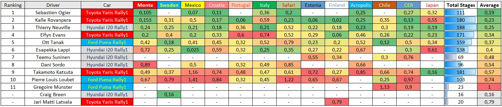
On this table you can see everyone's pace per rally with more detail.
All the numbers are second per kilometre deficits to the "ideal pace". The averages are calculated by multiplying the s/km deficit per rally with the stages that the driver completed in the rally, and adding them all together, and then divided by the total amount of stages the driver has competed in so far this season.
By Dimitris Theodorou
Massive thanks to eWRC, their s/km stat that's there on each stage saved me a lot of time
All pics are from the Red Bull Content Pool


Comments